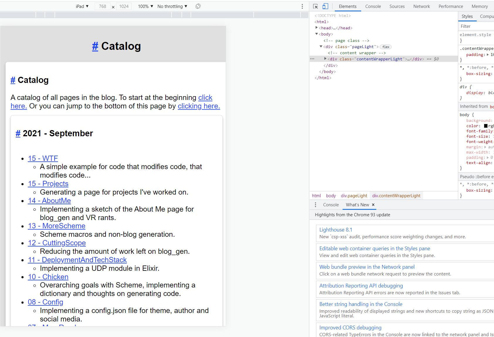

I injured my finger climbing, so no gym for the rest of the week. This means I can put in some extra time on these projects.
Today I implemented a catalog of all pages. This goes through and groups them by month, sorting by year.
Like the About Me and Projects pages, this is under the builder module. It's a lot of looping over the files, generating links and descriptions.
// builder/catalog.rs
use super::BuildContext;
use crate::{
parser::{ContentIr, LinkType, Page},
Item,
};
use std::{collections::HashMap, sync::Arc};
pub(crate) fn build(build_context: &Arc<BuildContext>) -> Page {
let file_name = "catalog.html".into();
let (header_links, mut contents) = generate_links(build_context);
let description = {
ContentIr::Div {
contents: vec![
ContentIr::text(
"A catalog of all pages in the blog. To start at the beginning ".into(),
),
ContentIr::Link {
description: "click here.".into(),
url: build_context
.md
.first()
.unwrap()
.1
.html_file_name
.to_str()
.to_string(),
link_type: LinkType::Regular,
},
ContentIr::text("Or you can jump to the bottom of this page by ".into()),
ContentIr::Link {
description: "clicking here.".into(),
url: format!(
"{}#{}",
file_name,
header_links.last().unwrap_or(&String::new())
),
link_type: LinkType::Regular,
},
],
}
};
contents.insert(0, description);
let contents = ContentIr::section("Catalog".into(), contents);
let page_contents = vec![
ContentIr::title("Catalog".into(), "catalog".into()),
contents,
];
Page {
contents: Item {
location: None,
item: ContentIr::Div {
contents: page_contents,
},
},
file_name,
keywords: vec![
"catalog".into(),
"blog_gen".into(),
"eric".into(),
"olson".into(),
"overview".into(),
"tech".into(),
],
summary: "A collection of all posts ever made.".into(),
title: "Catalog".into(),
}
}
struct Link {
description: String,
link: String,
title: String,
}
fn generate_links(build_context: &Arc<BuildContext>) -> (Vec<String>, Vec<ContentIr>) {
let mut map: HashMap<&String, (String, String, Vec<Link>)> = std::collections::HashMap::new();
for (_location, md) in build_context.md.iter() {
let link = Link {
description: md.summary.clone(),
link: md.html_file_name.to_str().to_string(),
title: format!("{} - {}", md.day, md.default_title),
};
if let Some((_, _, items)) = map.get_mut(&md.month_year) {
items.push(link);
} else {
let section_title = format!(
"{} - {}",
md.year,
map_month(md.html_file_name.to_str(), &md.month)
);
map.insert(
&md.month_year,
(
section_title,
format!("{},{}", md.year, md.month),
vec![link],
),
);
}
}
let mut contents = vec![];
map.iter().for_each(|e| contents.push(e));
contents
.sort_by(|(_, (_, a_date, _)), (_, (_, b_date, _))| a_date.partial_cmp(b_date).unwrap());
contents.reverse();
let mut header_links = vec![];
let contents = contents
.iter()
.map(|(_, (section_title, _date, links))| {
header_links.push(ContentIr::section_header_id(section_title.clone()));
ContentIr::section(
section_title.to_string(),
vec![ContentIr::UnorderedList {
items: links
.iter()
.rev()
.map(|l| ContentIr::Div {
contents: vec![
ContentIr::Link {
description: l.title.clone(),
url: l.link.clone(),
link_type: LinkType::Regular,
},
ContentIr::UnorderedList {
items: vec![ContentIr::text(l.description.clone())],
},
],
})
.collect(),
}],
)
})
.collect();
(header_links, contents)
}
fn map_month(file: &str, s: &str) -> &'static str {
match s {
"01" => "January",
"02" => "February",
"03" => "March",
"04" => "April",
"05" => "May",
"06" => "June",
"07" => "July",
"08" => "August",
"09" => "September",
"10" => "October",
"11" => "November",
"12" => "December",
_ => todo!("Unmapped month in file {}! {:?}", file, s),
}
}
Rather than going for sexy algorithms, it's simply spitting out what is needed in a fashion that would be easy to update later on.
Here's the final render:

I don't particularly enjoy the card in card layout but it gets the job done using what I already got. One future improvement would be collapsible sections.
Excluding stretch goals, this is all that remains:
Index page
Side nav for non-mobile
Top nav
Possibly JS search?